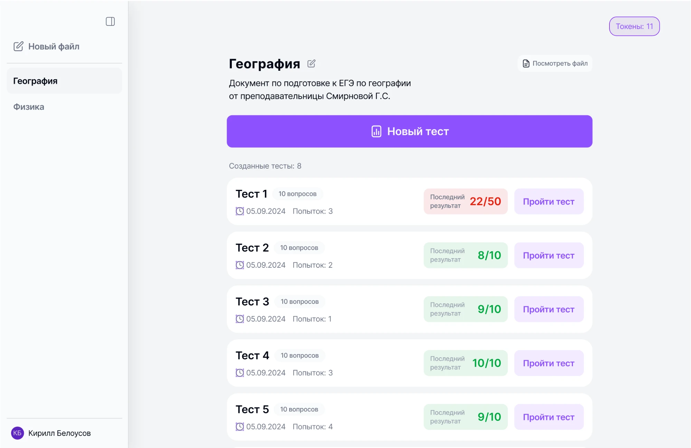

- Полноценный учительский кабинет с аналитикой по группам и студентам
- Платёжную систему
- Прозрачная система токенов с понятными списаниями
- Полноценная генерация теста по заданным фильтрам (кол-во вопросов, формат, дедлайн, таймер)
ГПтест
в проде ↗Заметил, что для учёбы всё чаще использую нейросети — подтвердил это опросом на 127 ответов и за месяц довёл идею до MVP: 20 активных пользователей, 5–6 сессий в неделю


Контекст
Работа и учёба
Учусь и работаю параллельно. Так как учёба у меня очно-заочная, многие темы приходится проходить самостоятельно, проверять тоже. Стал замечать, что для укрепления материала использую нейросети для проверки знаний. Стало интересно — сколько ещё людей, учащихся в вузах или купивших онлайн-курсы, испытывают сложность при закреплении материала.
Идея
Решить вопрос с подготовкой по собственным материалам
Я сам часто обращался за помощью к ChatGPT. Предположил, что можно использовать ИИ как двигатель, но обернуть его под удобный учебный интерфейс.
Опрос
Основная задача опроса — выявить реальную проблему
Чтобы определить, есть ли подобные сложности у других людей, пошёл в студенческие чаты — как вузов, так и онлайн-курсов. Спрашивал, чем люди занимаются, сталкиваются ли с проблемой проверки материалов по учёбе, как решают эту проблему и насколько удовлетворены решением.


Результат
Проблема подтвердилась
127 ответов, 2 недели. 59% используют ChatGPT. 40% не хватает объяснения ошибок, если использовать бесплатные онлайн-тесты. Остальное можно посмотреть на скринах:
Вопрос
Чем вы сейчас в основном занимаетесь?
И учусь, и работаю46.46%
Учусь в вузе / колледже26.77%
Работаю14.96%
Вопрос
Как часто вам нужно разобраться в новой теме или проверить знания?
Несколько раз в неделю40.52%
Несколько раз в месяц25.86%
Почти каждый день24.14%
Вопрос
Как вы сейчас обычно проверяете знания по теме?
Прошу ChatGPT составить вопросы59.52%
Сам делаю конспекты и повторяю55.95%
Решаю задания из учебников27.38%
Вопрос
По каким темам было бы полезно быстро создавать тесты?
Профессиональные темы по работе51.68%
Иностранные языки43.82%
Программирование / IT40.44%
Вопрос
С какими сложностями сталкиваетесь, когда хотите проверить знания?
Вопросы плохого качества или устаревшие39.06%
Не хватает объяснений ошибок39.06%
Трудно найти тест по нужной теме31.25%
Вопрос
На сколько удобным вы оцениваете своё текущее решение?
Средняя оценка 3.89
1
1.39%
2
1.39%
3
26.39%
4
48.61%
5
22.22%
Инсайты
После опроса сформировал инсайты
Большинство совмещают учёбу с работой — логично, на моём направлении все уже работают, и это основной род деятельности, а онлайн-курсы часто берут для смены рода деятельности или повышения квалификации. 57% отметили важность объяснения ошибок. Неожиданно заинтересовались репетиторы. Приступил к разработке учительского кабинета и вышел на тестирование с преподавателями.
Бэнчмаркинг
Посмотрел решения у прямых и косвенных конкурентов
Главный конкурент — ChatGPT: в РФ сложно оплатить, формат теста неудобный — если просишь сделать тест на 30 вопросов, получаешь полотно из 30 вопросов, нет возможности пройти тест, отмечая вопросы. Прямые конкуренты (Quizgecko, Examica) — зарубежные, в РФ не работают нормально. Разбора ошибок на русском нет ни у кого.
Команда
После исследования собрал команду
Предложил развивать проект совместно коллеге-разработчику и другу-аналитику. Чтобы работа продвигалась оперативно, собрали доску в Notion — записываем туда процессы, прогресс и задачи, приоритизируем их с аналитиком по фреймворку ICE. Через 1,5 месяца работы разработчик вышел из процесса — перешли на работу с нейросетями.
Гипотезы
Сформулировали продуктовую гипотезу и критерий успеха
Критерий успеха: пользователь возвращается без напоминаний — сам открывает и проходит тест. Если видим регулярные сессии без внешней мотивации, продукт работает.
H1 — Объяснение ошибок помогает учиться, а не просто проверяться. Это один из ключевых функционалов, отмеченных в опросе — приоритет на первом месте.
H2 — PDF/DOC/DOCX покроют большую часть сценариев загрузки.
H3 — Прогресс по материалу показывает человеку динамику усвоения материала, что позволяет самостоятельно отслеживать прогресс.
Черновые варианты собирал в Figma Make — это ускорило проработку сценариев перед финальной версткой.
1 итерация
Не концентрировался на дизайне — проверял функционал
20 человек, 2 недели. Оценивали функционал, не дизайн. Обратную связь собирал ежедневным опросом, за участие давал токены.


Результаты
Собрал обратную связь, ушёл на доработку
В большинстве случаев пользователи отмечали технические неполадки, неточные вопросы, странные ответы и очень простые объяснения.
Фидбек · 12 ответов
Насколько вы оцениваете работу сервиса?
Средняя оценка 3.5
1
0%
2
8%
3
33%
4
50%
5
0%
Фидбек · что не понравилось
Проблемы, которые называли пользователи
Качество вопросов для нестандартных файлов25%
Неудобный или скудный интерфейс17%
Нет индикатора времени генерации8%
Баги со счётчиком результатов8%
Нет дефолтного экрана при входе8%
Фидбек · что понравилось
Что отмечали как сильные стороны
Разбор ошибок и страница результатов25%
Скорость генерации теста17%
Разные типы вопросов8%
Публикация теста по ссылке8%
2 итерация
2 итерация уже содержала дизайнерские решения, совмещённые с техническими ограничениями
Изучил конкурентов, собрал макеты на основе фидбека.


Результаты
Провёл несколько интервью с пользователями
Флоу понятен всем 4 респондентам. Объяснения ошибок — понравились. Проблемы: непонятный копирайт кнопок и отсутствие нейминга файлов. Исправил.


3 итерация
Продовый вариант, который уже можно оценить самостоятельно — ГПтест
Написанный в коде и полностью работающий сервис.
Результаты
Сейчас сервисом пользуются как обычные люди, так и репетиторы
По фидбеку добавил: аналитику прогресса, попап выхода из теста, автоскролл к новым вопросам, анимацию генерации.
20
активных пользователей в продакшне
5–6
сессий в неделю на активного пользователя
3
итерации от MVP до продового решения
Планы
Сервис уже запущен, развитие в процессе
Что узнал
Важен прогресс
Пользователи оценили саму идею, но без ценностного функционала не хотят возвращаться. Аналитика по конкретному тесту оказалась важным шагом — следующий план: аналитика по всему загруженному документу с выявлением слабых зон.
ИИ-инструменты в учёбе оказались интересны не только ученикам, но и учителям. После первых сигналов заинтересованности провёл несколько интервью с преподавателями — презентовал идею, собрал обратную связь и приступил к разработке учительского кабинета.
Собрал рабочий продукт с помощью AI-инструментов для разработки (Codex/Claude Code) — не просто нарисовал макет, а довёл его до живого MVP, параллельно ведя документацию по решениям через тот же инструмент.